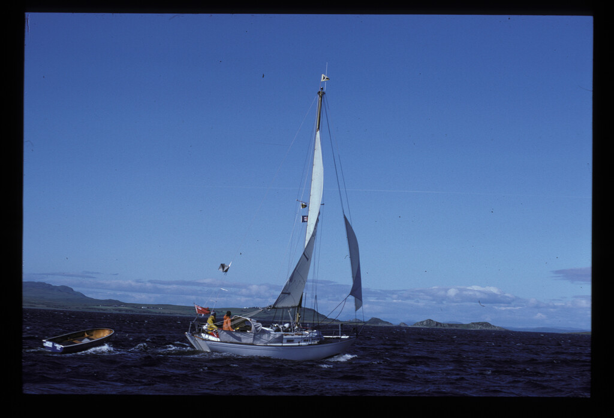
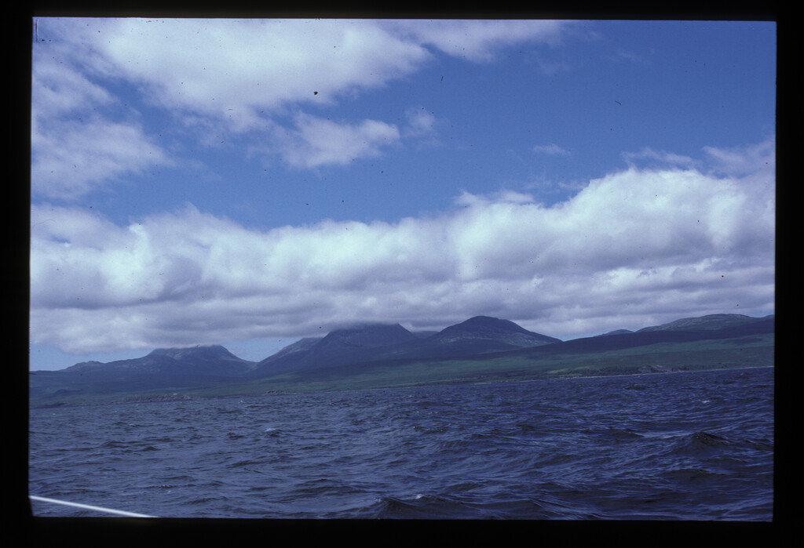

a sage from Ardfern marina told us it was "stoorie"
we sailed to to Crinan on day 2 with a glorious sunset that night.


|
|
| After sheltering in Adrfern on the
first night because a sage from Ardfern marina told us it was "stoorie" we sailed to to Crinan on day 2 with a glorious sunset that night. |
Boy david seeking shelter from the
storm. Doubtless we dined that night at the Galley of Lorne |
| |
|
 |
 |
| We woke to a breezy day. it made for
good sailing south to Craighouse Isle of Jura. |
|
|  |
 |
| The breeziness can be seen here. We
watched them pick up their Highland and Islands buoy under sail ar Craighouse |
Paps of Jura. There had been a plan
to climb them, but the following day was cloudy
|
 |
 |
| Jura Distillery. Obviously the
output had to be sample. We dined and bathed (peaty water) in the Jura Hotel. Rowing back to the mooring was a bit of an adventure in the dark, a few pints in. (it was still breezy) |
We spent a day on Jura and set off
on a much calmer, foggy day - aiming for Crinan. |
 |
 |
| "aiming
for Crinan" - but soon fogbound in the Sound of Jura - no GPS
back then. We floundered about with Charles blowing the aerosol foghorn. In a stroke of fortune we were found by a solo irishman who told us to follow him. He had been proceeding south and knew we were near Carsaig Bay on the Mull. He led us to said anchorage and to great relief we dropped the anchor into sand. of Kintyre. a. |
I think this is the irishman's boat.
he invited us aboard. What a salty sea dog he was. Navigating with a road map. he had been to the Faroes and was on his way back. He offered us whisky. |
 |
 |
 |
||
| Ardnalanish bay,
Isle of Mull |
Anchored at Crinan
|
|
 |